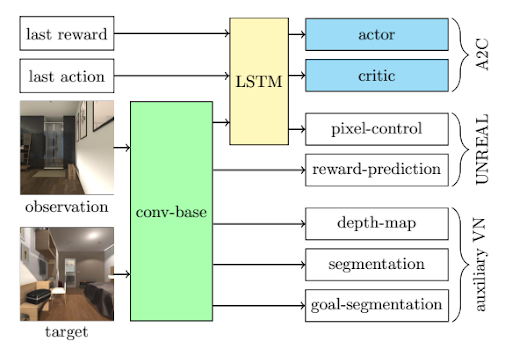
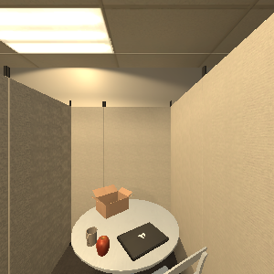
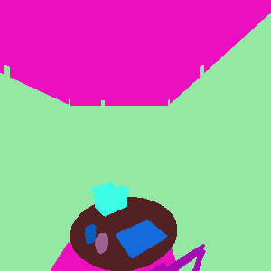
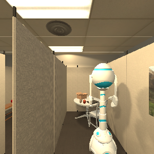
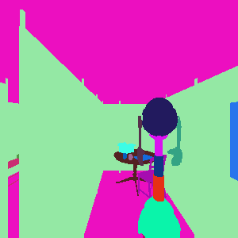
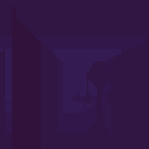

UIUC · Computer Vision
Multi-Perspective Vision-Based Navigation
We extend visual navigation to learn from multiple camera perspectives, adding third-person context to reduce partial observability.
University of Illinois at Urbana-Champaign

Overview
Third-person context for navigation.
Visual navigation is hard because agents only see a slice of the world. We fuse first-person and third-person views to learn policies that benefit from shared context.
Multi-View Inputs
RGB, segmentation, and depth across two perspectives.





Top row: first-person. Bottom row: third-person (second robot) in the same environment.